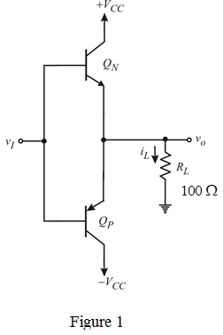

Step 1:
Consider the following class B output stage amplifier shown in Figure 1.

Step 2:
For the maximum power conversion efficiency, the output voltage is equal to the supply voltage.
Thus, the output voltage for maximum power-conversion efficiency, is .
.
The average power dissipated in the class B stage is,
From symmetry, half of the power, is dissipated in transistor,  and the other half in the transistor,
and the other half in the transistor,  .
.
Thus  and
and  must be capable of safely dissipating watts. Since
must be capable of safely dissipating watts. Since  depends on
depends on  , we must find the worst case power dissipation .
, we must find the worst case power dissipation .
Differentiate the average power equation with respect to the and equate the derivative to the zero to get the value of  that results in maximum average power dissipation.
that results in maximum average power dissipation.
Substitute 5 for in equation.
Therefore, the output voltage for maximum device dissipation is .
Step 3:
Derive the formula for efficiency of the amplifier.
The maximum efficiency is obtained when  is at its maximum, that is,
is at its maximum, that is,
Determine the power conversion efficiency for maximum output voltage.
Thus, the maximum power conversion efficiency is.
Step 4:
The output device is individually rated for dissipation, that is,
Write the formula for average power dissipated in the class B stage.
Rewrite the formula to get the expression for load resistance.
Thus, the smallest value of load resistance for operation at full output voltage is .
Step 5:
Determine the greatest possible output power available.
Thus, the greatest possible output power available is  .
.
Step 6:
For operation at half the full output voltage, the output voltage is half the value of  .
.
Derive the formula for efficiency.
Determine the power conversion efficiency for operation at half the full output voltage.
Thus, the power conversion efficiency for operation at half the full output voltage is.
Step 7:
Write the formula for load resistance.
Substitute for , 2.5 V for and 5 V for  .
.
Thus, the smallest value of load resistance for operation at half the full output voltage is.
Step 8:
Determine the greatest possible output power available.
Thus, the greatest possible output power for operation at half the full output voltage is .